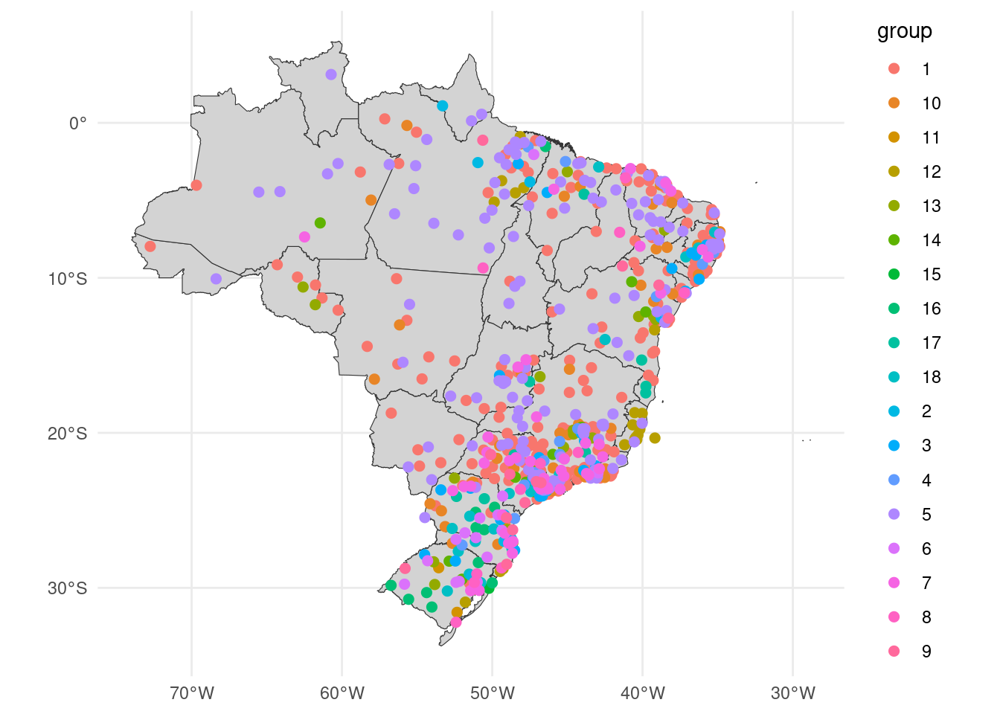

library(tidyverse)
library(lubridate)
library(arrow)
library(timetk)
library(dtwclust)
library(kableExtra)
library(tictoc)
library(sf)
source("../functions.R")Multivariate clustering
This notebook aims to cluster the Brazilian municipalities considering climate indicators with multivariate clustering techniques.
Packages
Load data
Daily, scaled maximum temperature, minimum temperature and precipitation.
tdengue <- open_dataset(sources = data_dir("bundled_data/tdengue.parquet")) %>%
select(mun, date, tmax, tmin, prec) %>%
collect()
dim(tdengue)[1] 340179 5Data for maps.
uf_sf <- geobr::read_state(showProgress = FALSE)Using year 2010coords <- geobr::read_municipality(showProgress = FALSE) %>%
st_make_valid() %>%
st_centroid()Using year 2010Warning: st_centroid assumes attributes are constant over geometriesPrepare data
For clustering, the data must be a list of data frames with climate data and without date.
gdengue <- tdengue %>%
group_by(mun) %>%
arrange(date) %>%
select(-date)
mdengue <- group_split(gdengue, .keep = FALSE) %>%
tslist(simplify = TRUE)
names(mdengue) <- group_keys(gdengue)$munglimpse(mdengue[1:3])List of 3
$ 110002: num [1:501, 1:3] -13.182 0.285 0.37 0.491 0.697 ...
..- attr(*, "dimnames")=List of 2
.. ..$ : NULL
.. ..$ : chr [1:3] "tmax" "tmin" "prec"
$ 110004: num [1:501, 1:3] -13.182 0.285 0.37 0.491 0.697 ...
..- attr(*, "dimnames")=List of 2
.. ..$ : NULL
.. ..$ : chr [1:3] "tmax" "tmin" "prec"
$ 110011: num [1:501, 1:3] -8.48 -8.48 -8.48 -8.48 -8.48 ...
..- attr(*, "dimnames")=List of 2
.. ..$ : NULL
.. ..$ : chr [1:3] "tmax" "tmin" "prec"SDTW clustering
Try from 2 to 20 partitions.
tic()
stdw_clust <- tsclust(
series = mdengue,
type = "partitional", k = 2:20,
distance = "dtw_basic",
seed = 13
)
toc()6930.239 sec elapsedCluster Validity Indices (CVI)
names(stdw_clust) <- paste0("k_", 2:20)
res_cvi <- sapply(stdw_clust, cvi, type = "internal") %>%
t() %>%
as_tibble(rownames = "k") %>%
arrange(-Sil)
res_cvi# A tibble: 19 × 8
k Sil SF CH DB DBstar D COP
<chr> <dbl> <dbl> <dbl> <dbl> <dbl> <dbl> <dbl>
1 k_18 0.890 0 435. 0.576 3.90 0.0286 0.0140
2 k_20 0.888 0 486. 0.532 3.97 0.0273 0.0109
3 k_14 0.881 0 443. 0.677 2.93 0.0216 0.0184
4 k_15 0.874 0 473. 1.03 2.38 0.0208 0.0160
5 k_16 0.872 0 455. 0.734 2.27 0.00540 0.0155
6 k_19 0.862 0 443. 0.578 2.37 0.0171 0.0129
7 k_13 0.832 0 447. 0.900 2.23 0.0153 0.0201
8 k_12 0.825 0 437. 0.698 1.98 0.0253 0.0227
9 k_10 0.820 0 513. 0.570 1.76 0.0253 0.0241
10 k_9 0.755 0 383. 1.32 2.43 0.0184 0.0375
11 k_8 0.751 0 371. 0.675 1.94 0.0335 0.0433
12 k_17 0.700 0 209. 3.81 8.40 0.0124 0.0318
13 k_11 0.673 0 297. 1.54 3.30 0.0124 0.0367
14 k_6 0.669 0 391. 0.959 1.88 0.0245 0.0567
15 k_4 0.608 0 444. 0.947 1.70 0.0245 0.0906
16 k_5 0.603 0 399. 1.17 1.99 0.0124 0.0678
17 k_3 0.600 0 321. 0.763 0.905 0.0418 0.115
18 k_7 0.449 0 164. 1.83 4.76 0.0124 0.0858
19 k_2 0.276 0 475. 0.773 0.773 0.103 0.985 m_sel_clust <- stdw_clust[[res_cvi[[1,1]]]]
plot(m_sel_clust)
Partitions size
table(m_sel_clust@cluster)
1 2 3 4 5 6 7 8 9 10 11 12 13 14 15 16 17 18
230 7 33 17 143 18 43 11 13 54 4 20 26 11 2 12 14 21 Map
coords <- coords %>%
mutate(code_muni = substr(code_muni, 0, 6))m_cluster_ids <- tibble(
code_muni = names(mdengue),
group = as.character(m_sel_clust@cluster)
) %>%
left_join(coords, by = "code_muni") %>%
arrange(group, name_muni) %>%
st_as_sf()
m_cluster_idsSimple feature collection with 679 features and 5 fields
Geometry type: POINT
Dimension: XY
Bounding box: xmin: -72.7546 ymin: -32.2198 xmax: -34.84751 ymax: 3.117846
Geodetic CRS: SIRGAS 2000
# A tibble: 679 × 6
code_muni group name_muni code_state abbrev_state geom
<chr> <chr> <chr> <chr> <chr> <POINT [°]>
1 260005 1 Abreu E Li… 26 PE (-35.01961 -7.879305)
2 230020 1 Acaraú 23 CE (-40.08916 -2.967873)
3 150040 1 Alenquer 15 PA (-55.03927 -0.6042975)
4 510025 1 Alta Flore… 51 MT (-56.3664 -10.05536)
5 350160 1 Americana 35 SP (-47.2891 -22.72336)
6 330010 1 Angra Dos … 33 RJ (-44.35303 -22.9867)
7 520110 1 Anápolis 52 GO (-48.97364 -16.29054)
8 230100 1 Aquiraz 23 CE (-38.39444 -3.976426)
9 230110 1 Aracati 23 CE (-37.68685 -4.680357)
10 270030 1 Arapiraca 27 AL (-36.64175 -9.749339)
# ℹ 669 more rowsggplot() +
geom_sf(data = uf_sf, fill = "lightgray", color = "grey20", size=.15, show.legend = FALSE) +
geom_sf(data = m_cluster_ids, aes(color = group), size = 2) +
theme_minimal()
Session info
sessionInfo()R version 4.3.2 (2023-10-31)
Platform: x86_64-pc-linux-gnu (64-bit)
Running under: Ubuntu 22.04.3 LTS
Matrix products: default
BLAS: /usr/lib/x86_64-linux-gnu/blas/libblas.so.3.10.0
LAPACK: /usr/lib/x86_64-linux-gnu/lapack/liblapack.so.3.10.0
Random number generation:
RNG: L'Ecuyer-CMRG
Normal: Inversion
Sample: Rejection
locale:
[1] LC_CTYPE=en_US.UTF-8 LC_NUMERIC=C
[3] LC_TIME=en_CA.UTF-8 LC_COLLATE=en_US.UTF-8
[5] LC_MONETARY=en_CA.UTF-8 LC_MESSAGES=en_US.UTF-8
[7] LC_PAPER=en_CA.UTF-8 LC_NAME=C
[9] LC_ADDRESS=C LC_TELEPHONE=C
[11] LC_MEASUREMENT=en_CA.UTF-8 LC_IDENTIFICATION=C
time zone: Europe/Paris
tzcode source: system (glibc)
attached base packages:
[1] stats graphics grDevices utils datasets methods base
other attached packages:
[1] sf_1.0-14 tictoc_1.2 kableExtra_1.3.4 dtwclust_5.5.12
[5] dtw_1.23-1 proxy_0.4-27 timetk_2.9.0 arrow_14.0.0
[9] lubridate_1.9.3 forcats_1.0.0 stringr_1.5.1 dplyr_1.1.4
[13] purrr_1.0.2 readr_2.1.4 tidyr_1.3.0 tibble_3.2.1
[17] ggplot2_3.4.4 tidyverse_2.0.0
loaded via a namespace (and not attached):
[1] DBI_1.1.3 s2_1.1.4 rlang_1.1.2
[4] magrittr_2.0.3 clue_0.3-65 furrr_0.3.1
[7] flexclust_1.4-1 e1071_1.7-13 compiler_4.3.2
[10] systemfonts_1.0.5 vctrs_0.6.4 reshape2_1.4.4
[13] rvest_1.0.3 lhs_1.1.6 tune_1.1.2
[16] wk_0.9.0 pkgconfig_2.0.3 fastmap_1.1.1
[19] ellipsis_0.3.2 labeling_0.4.3 utf8_1.2.4
[22] promises_1.2.1 rmarkdown_2.25 prodlim_2023.08.28
[25] tzdb_0.4.0 bit_4.0.5 xfun_0.41
[28] modeltools_0.2-23 jsonlite_1.8.7 recipes_1.0.8
[31] later_1.3.1 parallel_4.3.2 cluster_2.1.4
[34] R6_2.5.1 stringi_1.8.1 rsample_1.2.0
[37] parallelly_1.36.0 rpart_4.1.21 Rcpp_1.0.11
[40] assertthat_0.2.1 dials_1.2.0 iterators_1.0.14
[43] knitr_1.45 future.apply_1.11.0 zoo_1.8-12
[46] httpuv_1.6.12 Matrix_1.6-2 splines_4.3.2
[49] nnet_7.3-19 timechange_0.2.0 tidyselect_1.2.0
[52] rstudioapi_0.15.0 yaml_2.3.7 timeDate_4022.108
[55] codetools_0.2-19 curl_5.1.0 listenv_0.9.0
[58] lattice_0.22-5 plyr_1.8.9 shiny_1.8.0
[61] withr_2.5.2 evaluate_0.23 future_1.33.0
[64] survival_3.5-7 units_0.8-4 RcppParallel_5.1.7
[67] xml2_1.3.5 xts_0.13.1 pillar_1.9.0
[70] KernSmooth_2.23-22 foreach_1.5.2 stats4_4.3.2
[73] shinyjs_2.1.0 generics_0.1.3 hms_1.1.3
[76] munsell_0.5.0 scales_1.2.1 xtable_1.8-4
[79] globals_0.16.2 class_7.3-22 glue_1.6.2
[82] tools_4.3.2 data.table_1.14.8 RSpectra_0.16-1
[85] webshot_0.5.5 gower_1.0.1 grid_4.3.2
[88] yardstick_1.2.0 ipred_0.9-14 colorspace_2.1-0
[91] geobr_1.8.1 cli_3.6.1 DiceDesign_1.9
[94] workflows_1.1.3 parsnip_1.1.1 fansi_1.0.5
[97] viridisLite_0.4.2 svglite_2.1.2 lava_1.7.3
[100] gtable_0.3.4 GPfit_1.0-8 digest_0.6.33
[103] classInt_0.4-10 ggrepel_0.9.4 farver_2.1.1
[106] htmlwidgets_1.6.2 htmltools_0.5.7 lifecycle_1.0.4
[109] httr_1.4.7 hardhat_1.3.0 mime_0.12
[112] bit64_4.0.5 MASS_7.3-60